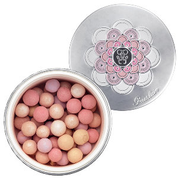

<div id="modalWindow" class="modal">
    <div class="closeModal">
        <button type="button" class="closeButton"></button>
    </div>
    <div class="photo">
        
    </div>
</div>
<div class="modal-background"></div>
<style>

/* Modal Styles */
.modal {
    z-index: 1000;
    display: none;
    background: #fff;
    position: absolute;
    left: 50%;
    border: 1px solid gray;
    box-shadow: 3px 3px 10px rgba(0,0,0,0.5);
    padding: 25px;
}
.closeModal {
    cursor: pointer;
    position: absolute;
    right: -50px;
    top: 0;
    background: #fff;
    padding: 5px 5px;
}
.closeButton {
    cursor: pointer;
    width: 33px;
    height: 34px;
    text-align: center;
    position: relative;
    vertical-align: text-top;
    display: inline-block;
    border: 0;
    background-repeat: no-repeat;
    font-style: normal;
}
.photo {
    margin-left: auto;
    margin-right: auto;
    height: auto;
    max-width: 100%;
}
/* Modal Backdrop */
.modal-background {
    background: #000;
    opacity: .4;
    position: fixed;
    top: 0;
    right: 0;
    bottom: 0;
    left: 0;
    z-index: 999;
    display: none;
}

</style>